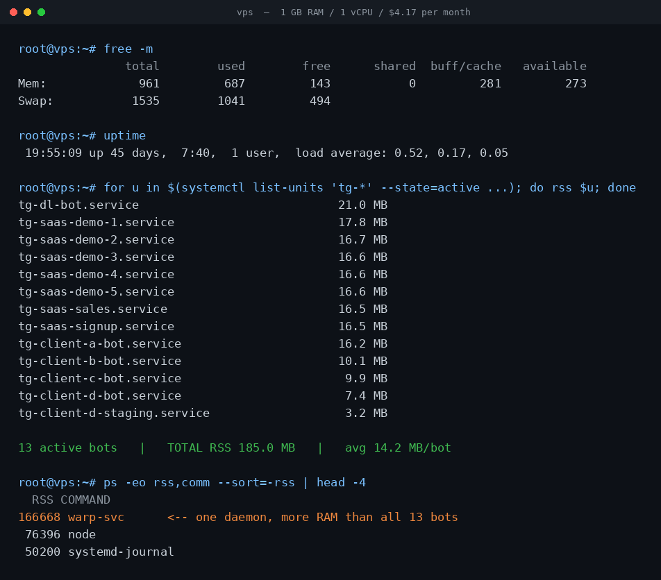

13 Telegram Bots on a $4.17 VPS: The Real RAM Numbers
Every thread about hosting a Telegram bot answers the same question with the same shrug. How much server do I need? — "not much", "a small VPS is fine", "1 GB is plenty". Nobody posts numbers. So people either overbuy a 4 GB instance for a bot that answers six commands, or they pick the cheapest box on the market and spend a weekend wondering whether it will fall over.
I have thirteen Telegram bots running right now on a single 1 GB, 1 vCPU VPS that costs $4.17 a month. Some are mine, some are client work, one is a staging copy. Instead of guessing, I measured every one of them. Here is what a Telegram bot actually costs in memory, what the real ceiling turned out to be, and the thing on my box that quietly used more RAM than all thirteen bots combined.

What is actually on the machine
The host is a 1 vCPU / 1 GB / 24 GB NVMe instance. Linux reports 961 MB usable after firmware reservations, which is the number worth planning against — not the 1024 you paid for. Thirteen tg-* systemd services are active: a media-downloader bot, seven demo and sales bots for a Telegram SaaS product, four client bots, and one staging duplicate.
All of them are Python, all use long polling rather than webhooks, and each one is a separate systemd unit with its own token and its own process. That last detail matters more than it sounds like it should, and I will come back to it.
What a Telegram bot really costs in RAM
Reading resident set size straight out of /proc/<pid>/status for each service's main PID:
| Bot | Resident memory | What it does |
|---|---|---|
| Media downloader | 21.0 MB | Fetches and returns media files |
| SaaS demo ×5 | 16.6–17.8 MB | Full menu, database, payments |
| Sales / signup bots | 16.5 MB | Forms, notifications |
| Client bot A | 16.2 MB | Team workflows |
| Client bot B | 10.1 MB | Command-driven |
| Client bot C | 9.9 MB | Command-driven |
| Client bot D | 7.4 MB | File uploads |
| Client D staging | 3.2 MB | Idle duplicate |
Thirteen bots, 185.0 MB total, averaging 14.2 MB each. The whole fleet fits in under a fifth of a 1 GB machine.
The spread is the interesting part. The lightest bot uses 3.2 MB and the heaviest uses 21.0 MB — a 6.5× range — and that gap has almost nothing to do with how many users each one serves. The staging bot at 3.2 MB and the client bot at 7.4 MB run the same framework as the 17 MB SaaS bots. What separates them is what they import.
A bot that only parses text commands loads the Telegram library and little else. A bot that pulls in an HTTP client, a database driver, an image library and a payments SDK pays for every one of those at startup, whether a user ever triggers that code path or not. Python's memory floor is set at import time, not at request time. If you want a cheaper bot, the lever is your dependency list, not your user count.
The biggest memory consumer was not a bot
This is the part that changed how I think about small hosts. Sorting every process on the box by memory, the top entry is not a Telegram bot at all:
| Process | Resident memory |
|---|---|
| warp-svc (networking daemon) | 162.8 MB |
| node | 74.6 MB |
| systemd-journal | 49.0 MB |
| All 13 Telegram bots combined | 185.0 MB |
A single networking daemon I installed once and forgot about uses 162.8 MB — roughly 88% of what all thirteen bots use together, and about eleven average bots' worth of memory. Add node and the journal and the non-bot overhead comfortably exceeds the entire fleet.
So the mental model most people bring to this is backwards. When someone asks "can my 1 GB VPS handle another bot?", the honest answer is that one more bot costs about 14 MB and is almost never the problem. The thing to audit is everything on the box that is not a bot: the monitoring agent, the VPN client, the container runtime, the log daemon with no retention limit. That is where a 1 GB machine actually goes.
The real ceiling is not memory
Here is the number I am not going to dress up. The box shows 687 MB of RAM in use and 1041 MB of swap in use. It is over-committed, and it has been for a while.
It has also been up for 45 days with a load average of 0.52, 0.17, 0.05, and the media bot has recorded zero restarts. Nothing is falling over. What that combination means is that a pile of memory has been paged out to disk and is simply never touched again — idle bots holding startup allocations they will not read a second time. On NVMe, that is a reasonable trade rather than a crisis, and it is exactly the behaviour Linux is supposed to produce.
But it does define the actual limit. When the constraint arrives, it will show up as latency, not as an out-of-memory kill: a bot whose pages have been swapped out takes a beat longer to answer the first message after a quiet spell. On one vCPU, the thing to watch is several bots waking simultaneously — a shared burst is a CPU and paging problem, never a headline RAM problem.
Two practical consequences I would apply to any small box:
- Cap the journal. An uncapped systemd journal grows until it owns real memory and real disk. Setting a size limit is a one-line change and buys back more than a bot's worth.
- Set per-service memory limits. systemd will do this for you with
MemoryMax=in the unit file, so one leaking bot degrades itself instead of the twelve next to it. The options are documented in systemd's resource-control manual.
One process per bot, and why it is worth it
Thirteen separate services is not the most efficient arrangement available. I could run several bots in one process and share an interpreter, saving maybe 100 MB of the 185.
I do not, and the reason is that the 100 MB is not the scarce resource — my attention is. When a client bot crashes on a bad update, it crashes alone. systemd restarts that one unit, the other twelve never notice, and the journal tells me exactly which one it was. Sharing a process to save memory I am not short of would trade a resource I have for a failure mode I would have to debug at two in the morning.
The same reasoning drives long polling over webhooks. Webhooks are more efficient at scale and need one HTTPS endpoint rather than thirteen open connections. But they also need a public certificate, a reverse proxy and a working DNS record before a single message is delivered — and every one of those is a thing that can break independently. Long polling, described in the official Telegram Bot API documentation, needs none of it: the bot dials out, so it works behind any firewall and needs no inbound access at all. At my volume that trade is obvious. Past a few hundred messages a second it flips, and python-telegram-bot's documentation covers both modes if you need to switch.
Measure your own box in one command
Nothing above required special tooling. To get the same table for your own server:
systemctl list-units 'tg-*' --state=active --no-legend --plain gives you the running units; for each one, systemctl show -p MainPID --value <unit> gives the PID, and grep VmRSS /proc/<pid>/status gives the memory. Then run ps -eo rss,comm --sort=-rss | head — that second command is the one that matters, because it is what showed me the 162.8 MB daemon I would never have suspected.
If you are sizing a box before you build anything: budget about 15 MB per bot, then add up everything else you intend to install, and let the second number drive the decision. On this evidence a 1 GB instance holds well over thirty typical bots on memory alone. It will run out of CPU, patience, or forgotten background daemons long before it runs out of RAM.
See a Mini App that needs no server at all
The cheapest bot to host is the one with no backend. My party game ships its logic inside the page Telegram opens — 151 questions per language, English and Ukrainian, no signup, nothing to switch off.
Open the Party Game No Telegram? It runs in a browser too: charliemorrison.dev/party-gamePutting your own bot on a box like this?
Telegram in Production includes the deploy half of this post as something you can run: a commented unit template plus preflight_unit.py, which lints a unit for the exact two failures behind the numbers above — a relative ExecStart under systemd's empty PATH, and Environment= names that do not match what the code reads. It diffs the declared names against the os.getenv calls in your source. With it: an initData validator that survives Bot API 8.0, poll payloads Telegram will not silently rewrite, and a one-page pre-ship checklist. 44 tests, no dependencies.
FAQ
How much RAM does a Telegram bot need?
On this server a long-polling Python bot settles between 3 MB and 21 MB resident, averaging 14.2 MB across 13 bots. The variation tracks what the bot imports rather than how many users it has — an HTTP client, a database driver and a media library cost more at startup than any amount of traffic does at runtime.
Can I run multiple Telegram bots on one 1 GB VPS?
Yes. Thirteen bots here use 185 MB in total, under a fifth of the machine. Memory is rarely the binding constraint — a single vCPU during simultaneous bursts, and non-bot daemons, both bite first.
Does each bot need its own server?
No. Each needs its own process and token, but one host handles many. A separate systemd service per bot on one machine gives you crash isolation without paying for separate servers.
Long polling or webhooks?
Long polling is cheaper and much simpler: no public endpoint, no certificate, no reverse proxy, and it works behind any firewall because the bot dials out. Webhooks win when you have high volume and already run a web server. At thirteen low-traffic bots, polling is not close to being the bottleneck.
Related reading
- Best Telegram download bots in 2026 — the media bot at the top of that memory table, and what it actually does.
- I messaged 18 "best" Telegram game bots — 7 never replied — what happens when nobody pays the $4.17.
- All the bots and Mini Apps I run — including the ones I retired, marked as retired.